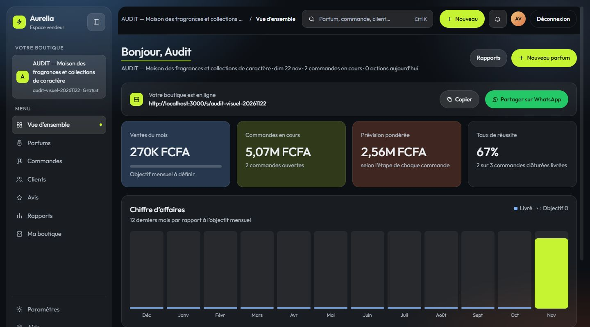
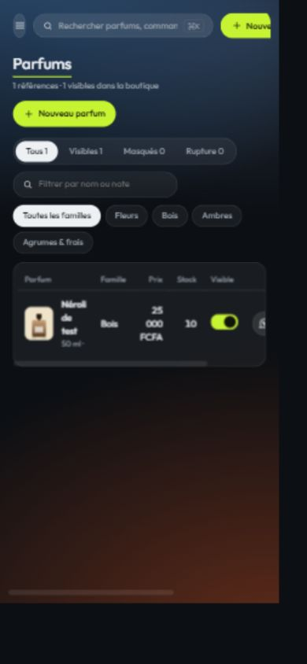
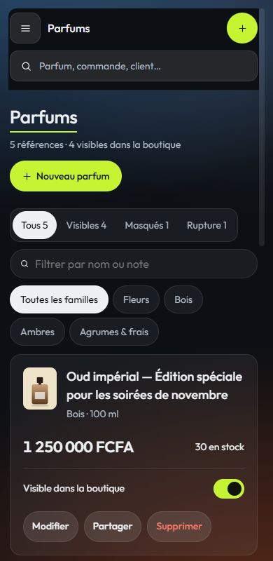
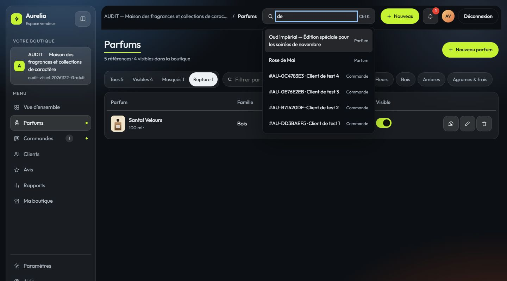
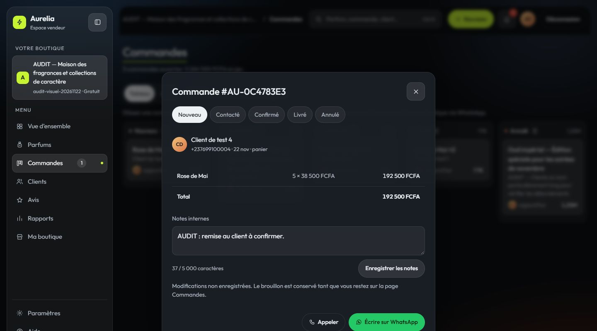
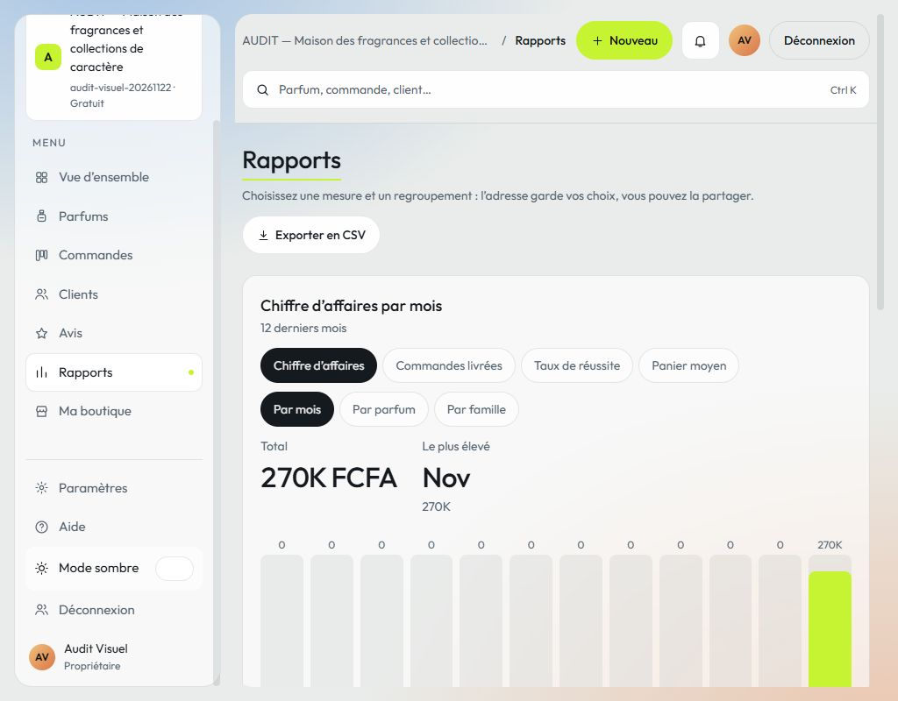
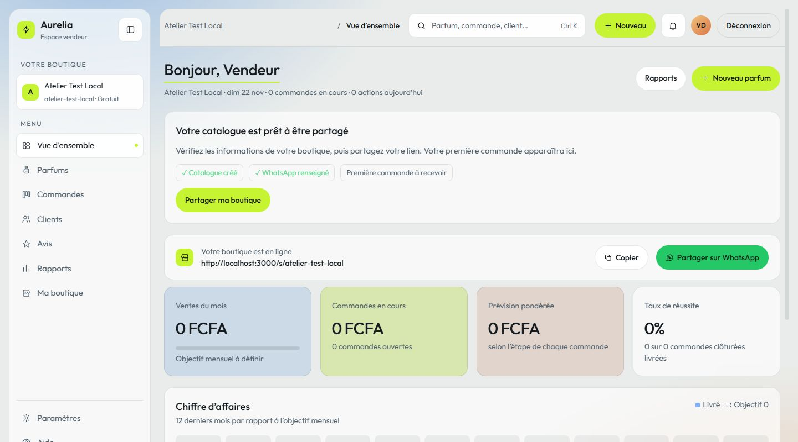

AURELIA · VALIDATION DU 22 NOVEMBRE 2026
Les 16 points corrigés
et revérifiés.
Correctifs des sept priorités, puis des neuf autres constats. Vérification fonctionnelle, clavier et responsive sur la version locale.
Résultat sur ordinateur

Vue d’ensemble, thème sombre, navigateur à 1440 × 1000 px.
Catalogue mobile : avant et après
Avant


Barre supérieure coupée, prix fragmenté et actions hors de vue.
Après


Barre sur deux lignes et cartes lisibles avec toutes les actions. 390 × 844 px.
Vérification des 16 points
| Référence | Correctif | Résultat constaté |
|---|---|---|
| A01 · validé | Suppression et annulation | Suppression depuis le navigateur réussie, message de confirmation puis restauration du produit avec Annuler. |
| A02 · validé | Période des rapports | Les ventes anciennes sont exclues du total et des regroupements : 50 000 FCFA au lieu de 75 000 FCFA dans le scénario de régression. |
| A03 · validé | CSV exact | Le fichier réellement téléchargé contient 269500, FCFA et le mois 2026-11. Les valeurs compactes restent limitées aux graphiques et cartes. |
| A04 · validé | Barre supérieure mobile | Aucun débordement de la barre à 320 et 390 px ; la déconnexion est accessible dans le menu mobile. |
| A05 · validé | Connexion sur petit écran | À 320 × 568 px, le bouton est visible et le formulaire défile : le lien de création de compte peut aussi être atteint. |
| A06 · validé | Menu réduit | Le bouton de réouverture de 44 px reste dans la barre de 88 px ; réduction et réouverture testées à la souris. |
| A07 · validé | Recherche | Les suggestions sont verticales, restent dans leur panneau et sont activables avec Entrée. Une sélection réinitialise les filtres du catalogue. |
| A08 · validé | Notes internes | Compteur, limite de 5 000 caractères, erreur visible, brouillon conservé à la réouverture et sauvegarde explicite confirmée. |
| A09 · validé | Navigation clavier | Tab et Maj+Tab restent dans la modale, le focus est visible et Échap restitue le focus au bouton déclencheur. |
| A10 · validé | Récupération après erreur | Un rapport invalide affiche une erreur contextualisée sans squelette permanent ; la page Parfums retrouve ses cinq lignes sans alerte résiduelle. |
| A11 · validé | Produits sur mobile | Présentation en cartes : nom lisible, montant sur une ligne, stock et actions Modifier / Partager / Supprimer accessibles. |
| A12 · validé | Lisibilité | Tableaux à 15 px ; en-têtes, boutons et sous-titres à 14 px. Contrôles et espacements revus dans les deux thèmes. |
| A13 · validé | Démarrage de boutique | Avec un parfum et aucune commande, le dashboard propose Partager ma boutique et ne demande plus d’ajouter le premier parfum. |
| A14 · validé | Nom de boutique long | Nom tronqué avec points de suspension, titre de page conservé et recherche séparée sur tablette ; pas de superposition. |
| A15 · validé | Avis vides | Carte explicative Aucun avis pour le moment ; aucune moyenne 0.0/5 fictive. |
| A16 · validé | Relances sans date | Une date absente renvoie Non planifiée ; seules les échéances renseignées apparaissent dans À relancer bientôt. |
Autres captures
Recherche contenue dans son panneau


Notes sauvegardées explicitement


Thème clair sur tablette


Prochaine étape après le premier produit


Tests et preuves conservées
- Sortie complète de npm test : 21 réussites, aucun échec.
- 14 contrôles complémentaires : 14 réussites, contre 10 réussites et 4 échecs à l’audit initial.
- Mesures responsive : 320 × 568, 390 × 844, 1024 × 800, 1309 × 909 et 1440 × 1000 px. Pour chaque mesure, la barre supérieure et le contenu principal restent dans la largeur disponible.
- CSV réellement téléchargé : ligne
2026-11 ; 269500 ; FCFA ; 100. - Aucune erreur JavaScript relevée pour le bundle final pendant les scénarios exécutés.
- Compilation des deux interfaces réussie ; dashboard reconstruit après le dernier ajustement de recherche et de notes.
Incident du stockage local et protection ajoutée
Le redémarrage a révélé un journal PGlite illisible. L’ancien dossier a été conservé dans .local/postgres-before-validation-20261122. Une récupération sur copie puis un réimport avec contraintes ont conservé les deux comptes, les deux boutiques et le produit initial. Les cinq produits, cinq clients et cinq commandes fictifs de l’audit ont été recréés pour les vérifications ; une commande fictive a ensuite été marquée livrée et une note de test enregistrée.
Le mode local refuse désormais une seconde ouverture du serveur et fixe un point de reprise après les écritures validées. Un test sur une base temporaire indépendante a vérifié qu’une écriture validée survit à un arrêt brutal du processus de test. Le mécanisme de récupération a été examiné à partir de la contribution PGlite #994 et exécuté uniquement sur une copie ; aucune réparation automatique du journal n’a été ajoutée à l’application. La procédure de réimport suit le principe de récupération et reconstruction décrit par PostgreSQL.
Limites de la vérification
Les essais utilisent PGlite en local, des données fictives et des dimensions de navigateur. Une instance PostgreSQL réseau, HTTPS, les téléphones physiques et les tests de charge restent hors de cette validation. Aucun message WhatsApp n’a été envoyé et aucun paiement n’a été effectué.